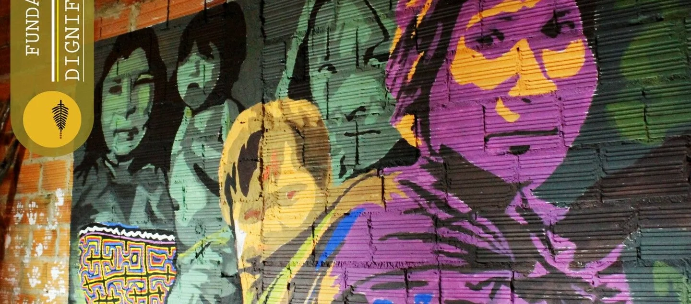
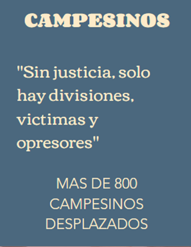
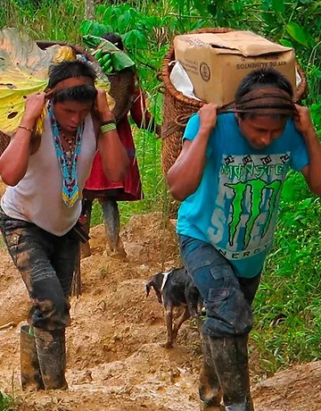
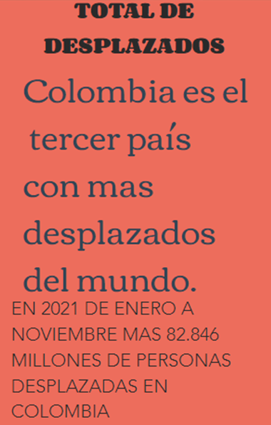
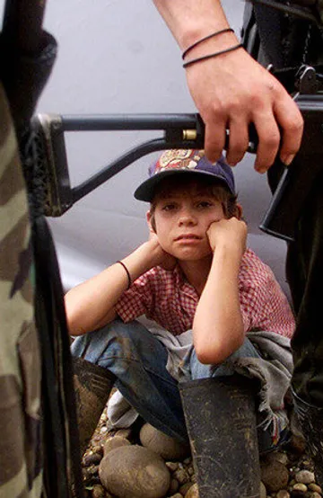
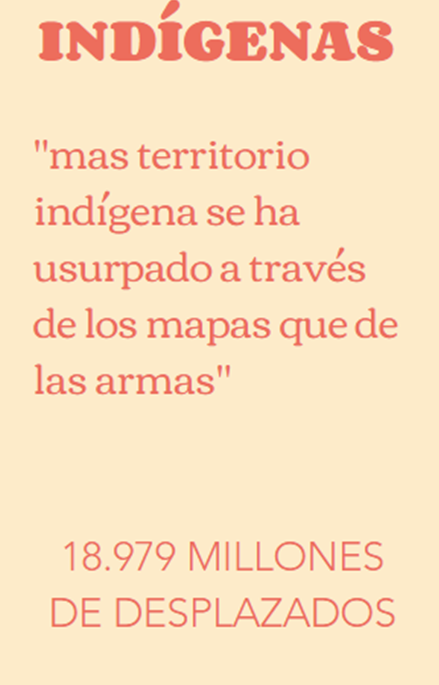

La historia de Colombia se ha caracterizado por violentos despojos de tierras a comunidades campesinas, indígenas y afrodescendientes. Existen varios factores que han propiciado el desplazamiento interno en Colombia. Es el resultado de diferentes estrategias empleadas por grupos guerrilleros, bandas de narcotraficantes, paramilitares, que convierten y vulnerabilizan a la poblacion civil por sus acciones.
En los años 1980 a 1990 El desplazamiento forzado fue un fenómeno masivo de larga duración y vinculado en gran medida al control de territorios estratégicos. Más allá de la confrontación entre actores armados, existen intereses económicos y políticos que presionan al desalojo de la población civil de sus tierras y territorios.
Algunos acudieron a mecanismos violentos de despojo, otros a recursos legales para formalizar la toma de tierras y unos más aprovecharon la vulnerabilidad del mercado para comprar tierras a menor costo.
Lastimosamente estos hechos siguen haciendo eco en la actualidad por la falta de interes del gobierno han hecho un incremento mayor de familias afectadas por este fenomeno, sumando la reciente llegada de venezolanos al pais, incremento la violencia, la pobreza y la falta de oportunidades.
Fuentes:
Wikipedia - La Semana